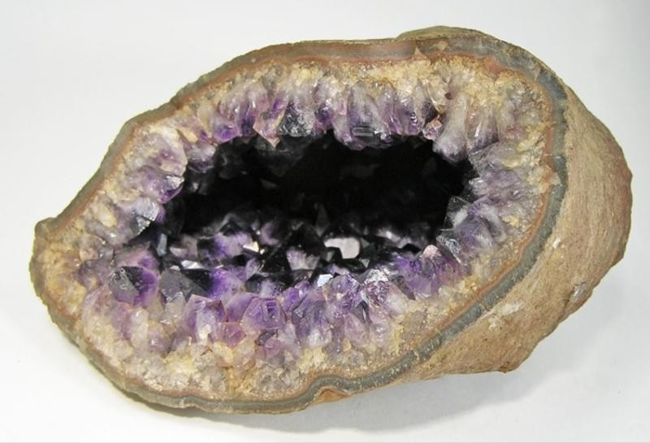
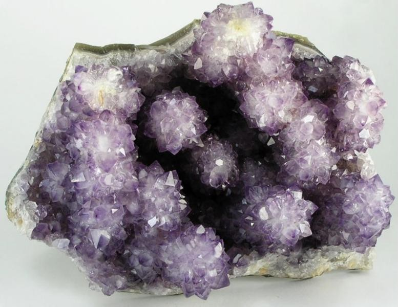
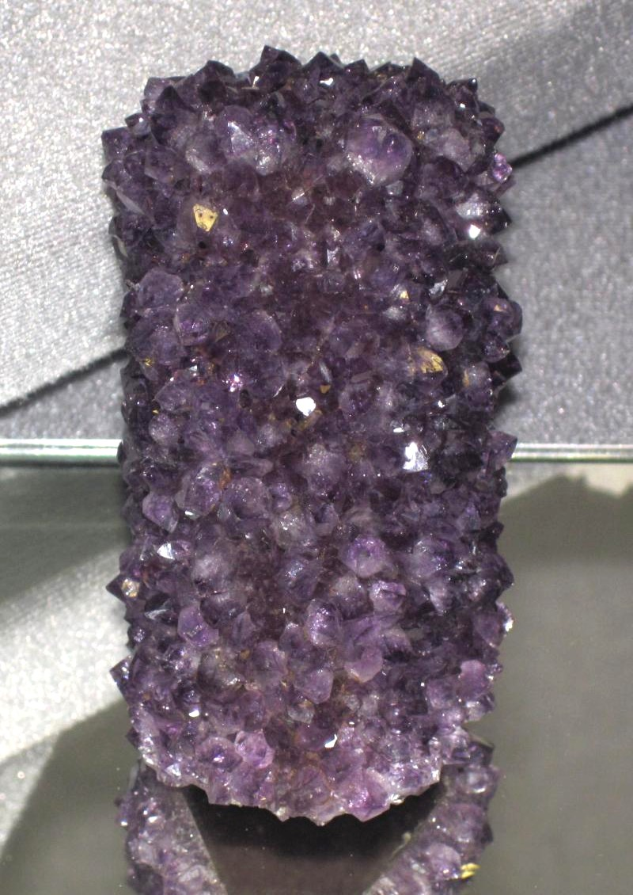

Una aventura entre piedras
El Safari Minero es una excursión turística guiada a la zona minera de Catalán, a unos 40 km de la ciudad de Artigas por la Ruta 30. En compañía de un guía, se recorren minas de ágatas y amatistas para entender cómo se formaron estas piedras y cómo se extraen.
La propuesta lleva más de diez años. Nació de una idea surgida en el Centro Figari de UTU Artigas y forma parte del turismo minero del departamento. Hoy se reserva en la ciudad, a través del Hotel Casino San Eugenio del Cuareim.
Qué se recorre
- Un túnel minero acondicionado para visitas, con geodas incrustadas en las paredes.
- Canteras a cielo abierto, algunas en actividad, donde se ve cómo se trabaja la piedra.
- Un rato para juntar muestras propias (ágatas, amatistas, calcitas o jaspes), con orientación y el equipo adecuado.
- Un taller en la ciudad donde las piedras se cortan, se pulen y se clasifican, y un salón de exposición y venta.
Antes de ir
Hay que reservar con anticipación y consultar disponibilidad, horarios, precios y condiciones de la visita. Las minas están en predios privados y en actividad: no se visitan por cuenta propia.
Fotos

Foto: Robert M. Lavinsky · CC BY-SA 3.0 · Foto de referencia

Foto: Robert M. Lavinsky · CC BY-SA 3.0 · Foto de referencia

Foto: James St. John · CC BY 2.0 · Foto de referencia


_(30323704822).jpg){kind=link}